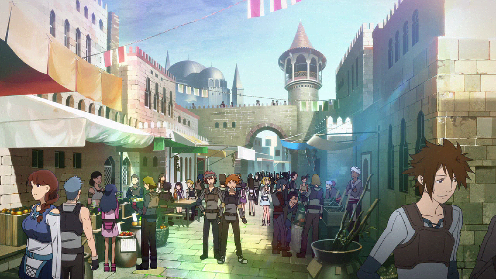
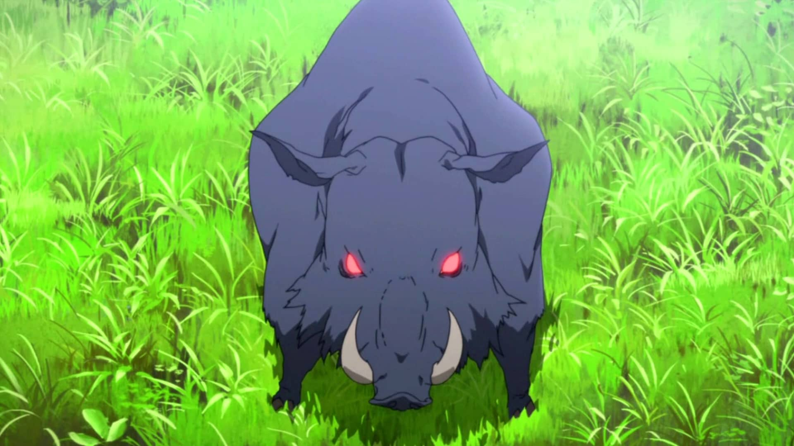

Sword Art Online by Light Yugen
Something happens... who knows what?!
!story.isInInventory('dummyObject')
As you try to get it... It is clear that the inventory works!
{{ story.putInInventory('dummyObject'); }}
The world of Sword Art Online is an interesting and amazing place,
for people that want to explore every inch of the floor, for seeking explorers going deep in unknown dungeons, to brave swordsmen fighting for honor!
How long will you survive in Sword Art Online?
Taking a deep breathe, you put on your nervegear!
Welcome new player, you are about to embark on probably the most epic journey across the Aincread realm.
The SAO players must beat all 100 floors of this steel castle, if they wish to be free.
On the right hand side is the inventory for whatever precious items you may find, certain items have actives which may be helpful.
Luckily we didn't disable the log out button and saving the game is possible in the lower right corner.
Spawn into the game?
Taking a deep breathe you enter the game
You decide to return to the main menu
Welcome to Sword Art Online!
You spawn on floor 1:Town of Beginnings.
You are given clothes and a wooden sword.
Where do you go?
Visit the tavern
Check out the market
Enter the forest
You enter the tavern.
Fight a boar
Return to the town

You enter the busy market street and look around for:
Fight a boar
Return to the town
You enter the forest.
You look around you and see other players in beginner gear running around and hunting animals.
What do you do?
Fight a boar
Return to the town

A (Lv.1 Boar) is charging towards you. What do you do?
Charge attack (60% chance)
Stab (80%chance)
You are in an empty page except for a paragraph.
Quite unsurprisingly, there is even an object lying around.
Looking around with more attention, you notice another page
Seiously, What did you expect?
Plot twist! The story ends abruptly.
{{ story.endGame(); }}